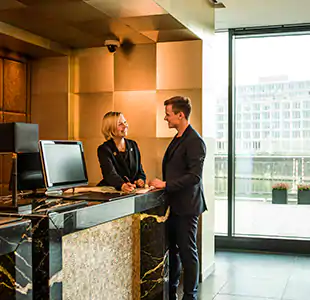
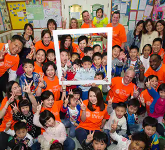
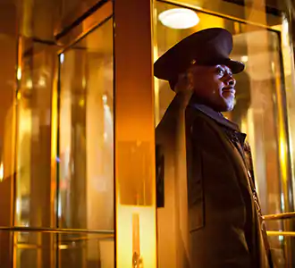

|  |
WE ARE family
Our foundation in family goes back to 1957, when entrepreneur Jay Pritzker purchased
the original Hyatt House motel. Pritzker and his brother, Donald, worked to grow the
Hyatt brand, powered by their belief in the importance of family and care. As of December 31,
2021, Hyatt’s portfolio included more than 1,150 hotel and all-inclusive properties in
70 countries across six continents. |
| We embrace Everyone
With more than 130,000 colleagues across more than 70 countries, we embrace
all cultures, races, ethnicities, genders, sexual orientations, ages, abilities,
perspectives, and ways of thinking. Our culture is one that empowers every individual
to be his or her best, and such authentic connection inspires the way we care for each
other and for our guests. |
|
|  |
We embrace Everyone
With more than 130,000 colleagues across more than 70 countries, we embrace all cultures, races, ethnicities, genders, sexual orientations, ages, abilities, perspectives, and ways of thinking. Our culture is one that empowers every individual to be his or her best, and such authentic connection inspires the way we care for each other and for our guests. |
| FIND your place AT HYATT
Be a part of something bigger. Enjoy life every day. Make a difference in the lives of those around you. Love where you work. Join a company that values respect, integrity, humility, empathy, creativity, and fun. With careers spanning the globe, your perfect opportunity awaits. Discover why Hyatt is consistently ranked one of the world’s best places to work. |
> |